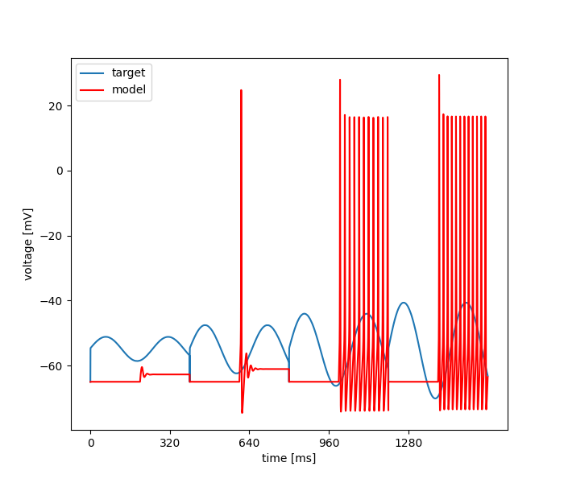

Thu Aug 15 10:56:57 2024
Optimization of hh_pas.hoc based on: /home/tamogh/neuroptimus/neuroptimus/new_test_files/testcase_1_hh_pas_surrogate/input_data2.dat
Results
| Parameter Name | Minimum | Maximum | Optimum |
|---|---|---|---|
| soma cm | 0.5 | 3.0 | 2.9999967310637805 |
| soma Ra | 50.0 | 150.0 | 104.93910193754267 |

seed = 1234
current_algorithm = {'BAYESIAN_INFERENCE': {'prior_mean': [2.5, 120], 'prior_std': [2, 50], 'ndim': '2', 'nwalkers': '6', 'starting_point': [1.2, 105], 'noise': 'colour', 'D': 10, 'lamb': 0.1, 'sigma': 0.1}}
num_params = 2
boundaries = [[0.5, 50.0], [3.0, 150.0]]
starting_points = None
algorithm_parameters = {'prior_mean': [2.5, 120], 'prior_std': [2, 50], 'ndim': '2', 'nwalkers': '6', 'starting_point': [1.2, 105], 'noise': 'colour', 'D': 10, 'lamb': 0.1, 'sigma': 0.1}